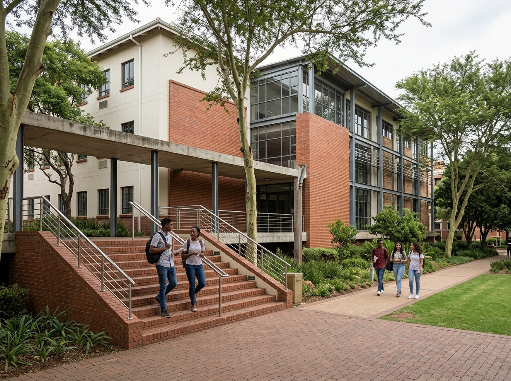

Business and Management
Business administration, management and postgraduate study in business.
Our history, purpose and academic community are at the centre of the university experience.
Crestwood University was established in 1998 as a comprehensive South African institution focused on teaching, research and community engagement.
The university brings together academic study and practical learning across a broad range of disciplines, giving students space to develop knowledge, creativity and professional confidence.

To support meaningful learning, research and community engagement while helping students develop the knowledge and capabilities needed beyond university.
To connect academic excellence, innovation and practical contribution in a university environment that prepares students for a changing world.
Our motto reflects the relationship between what students learn, how they apply it and the contribution they make.
Explore the academic areas represented across Crestwood's programme offering.
Business administration, management and postgraduate study in business.
Computer science and computing programmes from undergraduate to doctoral study.
Engineering study with undergraduate, honours, master's and doctoral pathways.
Education programmes covering undergraduate, honours, master's and doctoral levels.
Communication, media and humanities programmes across multiple levels of study.
Biological sciences programmes spanning undergraduate, honours, master's and doctoral study.